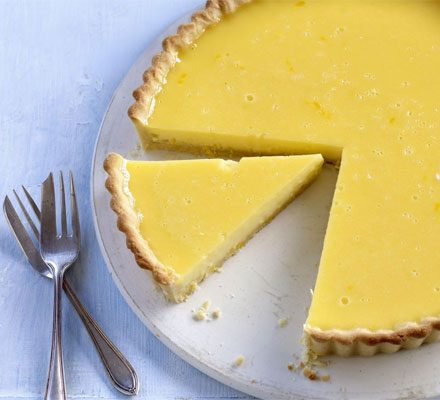

Lemon Tart

Lemon tart with custom pastry crust
A classic French lemon tart with a sweet crumbly pastry base, filled with a tangy, zingy, lemon filling
Ingredients
Pastry crust
- 500g plain flour
- 100g of icing sugar
- 250g of unsalted butter
- 4 egg yolks
Filling
- 5 eggs
- 140g caster sugar
- 150ml double cream
- 2-3 juiced lemons (100m)
Recipe
- To make the pastry, mix the flour and icing sugar in a bowl. Rub the butter into the flour with your fingers until crumbly.
- Mix in the egg yolks. Roll into a ball and divide in half (freeze one half for another recipe).
- SFlatten out the pastry with your hands, wrap the dough in cling film, then chill for at least 30 mins.
- For the filling, beat all the ingredients, except for the zest, together. Sieve the mixture, then stir in the zest.
- Roll out the pastry on a lightly floured surface to about the thickness of a 1cm, then lift into a 23cm tart tin.Stab a few holes in the bottom with a fork and put back in the fridge for 30 mins.
- Heat oven to 140C fan/gas 3. Line the tart with foil and fill with rice. Bake for 10 mins, then remove the tart tin from the oven, discard the foil, and bake for another 20 mins until biscuity.
- Pour in the lemon mixture and bake again for 30-35 mins until just set. Leave to cool, then remove the tart from the tin and serve at room temperature or chilled.
Home Page